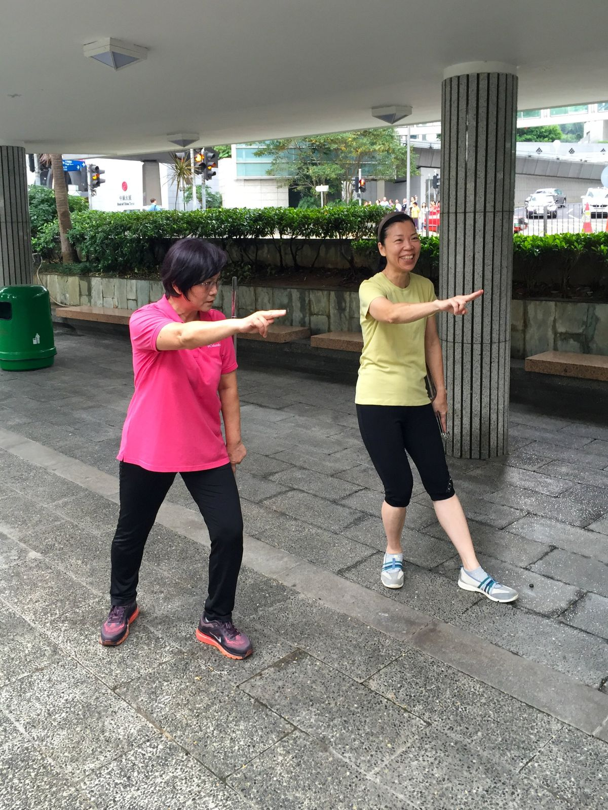
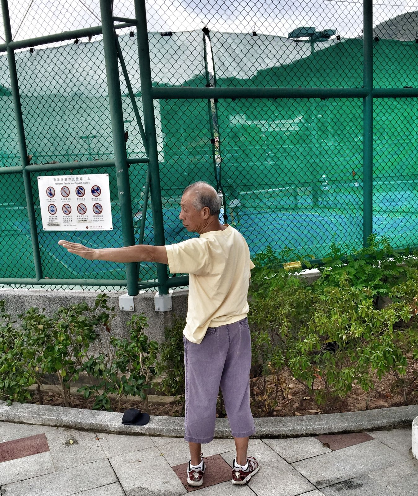

Hongkong riecht. Das meine ich freundlich. Morgens in den Parks und den kleinen Grünanlagen mischt sich der Duft der Stadt mit dem Duft der Bäume, und so habe ich das selten irgendwo gerochen. Vielleicht kein Zufall bei einer Stadt, deren Name übersetzt „duftender Hafen“ heißt. Gemeint war damit wohl das Räucherholz, mit dem hier früher gehandelt wurde. Ganz sicher ist das nicht.
Und überall standen sie. Allein, zu zweit, manchmal mehr. Die Arme in Zeitlupe, das Gewicht wandert von einem Fuß auf den anderen. Vollkommen ausgeglichen.
Zwei Frauen in Sichtweite des Bank of China Tower haben mich dann endgültig neugierig gemacht. Die eine schaute konzentriert über ihre ausgestreckten Finger. Die andere lachte. Sie hatte mich mit der Kamera längst entdeckt. Beide zeigten auf denselben Punkt irgendwo zwischen den Hochhäusern. Ich wollte wissen, was die beiden da machen. Also habe ich nachgelesen und es probiert. Ergebnis vorweg: Es entspannt.

Was ist Tai Chi?
Tai Chi, auf Chinesisch Taijiquan 太極拳, ist eine Kampfkunst. Eine sehr langsame. Lockere, runde Bewegungen, ein geregelter Atem, ein ruhiger Kopf. So beschreibt es die UNESCO, die Taijiquan 2020 in die Liste des immateriellen Kulturerbes der Menschheit aufgenommen hat.
Beim Alter wird gern übertrieben. Jahrtausende alt ist Tai Chi nicht. Laut UNESCO entstand es Mitte des 17. Jahrhunderts im Kreis Wenxian in der Provinz Henan, andere Quellen nennen das späte 16. Jahrhundert. Als Begründer gilt meist Chen Wangting aus dem Dorf der Familie Chen. Ganz geklärt ist das nicht. Um die Anfänge ranken sich Legenden, eine davon führt zur Sagengestalt Zhang Sanfeng. Heute gibt es mehrere Stile, meist nach einer Familie oder einem Meister benannt.

Ein Stil, eine Bewegung, das gibt es nicht. Der Mann in Aberdeen streckt die flache Hand aus, die beiden Frauen in Central zeigten mit dem Schwert-Finger.
Wie ernst Hongkong das nimmt, zeigt eine Zahl. Am 30. September 2007 machten 20.236 Menschen gemeinsam Tai Chi auf dem Gelände des alten Flughafens Kai Tak. Hongkong-Rekord, meldete die Regierung.
Was bringt es?
Die US-Gesundheitsbehörde NCCIH hat die Studien gesichtet. Am besten belegt ist das Gleichgewicht. Bei älteren Menschen stürzen mit Tai Chi etwa 20 Prozent weniger. Andere Gleichgewichtsübungen schaffen Ähnliches. Bei Arthrose in Knie und Hüfte empfehlen amerikanische Rheumatologen Tai Chi ausdrücklich. Für Kreuzschmerzen oder Blutdruck gibt es Hinweise, meist aus kleinen Studien. Als sicher gilt es auch, die gemeldeten Beschwerden waren vor allem Muskel- und Gelenkschmerzen.
Und ich? Es entspannt. Das ist mein Eindruck, mehr nicht.
Morgens zwischen den Hochhäusern, überall Leute in Zeitlupe. Es war sehr schön anzusehen.
Die Schwert-Finger-Übung
Die beiden Frauen in Central haben mit dem Schwert-Finger geübt, auf Chinesisch 剑指, jiàn zhǐ. Zeige- und Mittelfinger sind gestreckt und liegen eng zusammen, der Daumen liegt auf Ring- und kleinem Finger. So habe ich es vor Ort gesehen. Dazu kommen die Grundregeln, die in Anleitungen immer wieder auftauchen: Knie nie durchgedrückt, Schultern locker, langsam in den Bauch atmen. Beim Strecken ausatmen, beim Zurücknehmen einatmen.

- Ausfallschrittruhig atmenMit dem linken Fuß einen weiten Schritt nach vorn. Das vordere Knie ist gebeugt, das hintere Bein fast gestreckt. Beide Fußsohlen stehen fest am Boden, das Gewicht liegt spürbar vorn. Nur so tief, wie es bequem bleibt.
- LadeneinatmenDie rechte Hand geht als lockere Faust zurück an die Hüfte. Tief in den Bauch einatmen, der Blick geht schon nach vorn.
- Schwert-FingerausatmenDen linken Arm langsam nach vorn schieben, kontrolliert, als würde man gegen einen Widerstand drücken. Die Hand formt den Schwert-Finger: Zeige- und Mittelfinger gestreckt und zusammen, Ring- und kleiner Finger eingerollt, der Daumen liegt darauf. Der Blick geht über die Fingerspitzen hinweg auf einen festen Punkt in der Ferne.
- ZurückeinatmenDas Gewicht wandert zurück aufs hintere Bein, der Arm sinkt, die Faust löst sich. Fuß zurückstellen, Seite wechseln. Ein paar Runden, so langsam, wie es geht.
Der Ausfallschritt geht auf die Knie. Wer Probleme mit Knien oder Rücken hat, fragt vorher die Ärztin oder den Arzt. Richtig lernt man Tai Chi bei jemandem, der es unterrichtet. Eine Website ersetzt das nicht, diese auch nicht.
Mehr Hongkong mit Geschichten statt Regeln: die Hongkong-Story. Noch mehr Reise-Wissen aus Asien: Verbeugen in Japan.
Quellen & Recherche
Herkunft, Wirkung und Grundregeln habe ich bei der UNESCO, der US-Gesundheitsbehörde NCCIH und in Nachschlagewerken nachgelesen, Stand Oktober 2026. Woher der Name Hongkong kommt, ist nicht eindeutig belegt, die Räucherholz-Erklärung gilt als die verbreitetste. Die Fotos sind von mir, Aberdeen 2015 und Central 2019, fotografiert mit Erlaubnis. Die Grafik habe ich selbst gezeichnet.
- Taijiquan, UNESCO Immaterielles Kulturerbe
- Chen-style tai chi, Wikipedia
- Tai Chi: What You Need To Know, NCCIH
- 20.236 Menschen beim Tai Chi, Regierung Hongkong 2007
- Tai Chi Posture and Breathing, For Dummies
- Jiàn, das gerade Schwert, Wudang Academy
- Origins of the name Hong Kong, Industrial History of HK